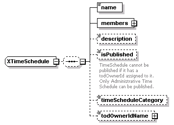
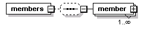
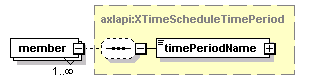
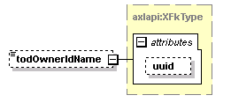

| diagram |  | ||
| namespace | http://www.cisco.com/AXL/API/10.5 | ||
| children | name members description isPublished timeScheduleCategory todOwnerIdName | ||
| used by |
|
||
| source | <xsd:complexType name="XTimeSchedule"> <xsd:sequence minOccurs="0"> <xsd:element name="name" type="axlapi:String50" nillable="false" minOccurs="1" maxOccurs="1"/> <xsd:element name="members" minOccurs="1" maxOccurs="1"> <xsd:complexType> <xsd:complexContent> <xsd:extension base="axlapi:XCommonMembersExtension"> <xsd:sequence minOccurs="0"> <xsd:element name="member" type="axlapi:XTimeScheduleTimePeriod" minOccurs="1" maxOccurs="unbounded"/> </xsd:sequence> </xsd:extension> </xsd:complexContent> </xsd:complexType> </xsd:element> <xsd:element name="description" type="axlapi:String255" nillable="false" minOccurs="0" maxOccurs="1"/> <xsd:element name="isPublished" type="axlapi:boolean" default="false" nillable="false" minOccurs="0" maxOccurs="1"> <xsd:annotation> <xsd:documentation>TimeSchedule cannot be published if it has a todOwnerId assigned to it. Only Administrative Time Schedule can be published.</xsd:documentation> </xsd:annotation> </xsd:element> <xsd:element name="timeScheduleCategory" type="axlapi:XTimeScheduleCategory" default="Regular" nillable="false" minOccurs="0" maxOccurs="1"/> <xsd:element name="todOwnerIdName" type="axlapi:XFkType" nillable="true" minOccurs="0" maxOccurs="1"/> </xsd:sequence> </xsd:complexType> |
element XTimeSchedule/name
| diagram | |||||||
| type | axlapi:String50 | ||||||
| properties |
|
||||||
| facets |
|
||||||
| source | <xsd:element name="name" type="axlapi:String50" nillable="false" minOccurs="1" maxOccurs="1"/> |
element XTimeSchedule/members
| diagram |  | ||
| type | extension of axlapi:XCommonMembersExtension | ||
| properties |
|
||
| children | member | ||
| source | <xsd:element name="members" minOccurs="1" maxOccurs="1"> <xsd:complexType> <xsd:complexContent> <xsd:extension base="axlapi:XCommonMembersExtension"> <xsd:sequence minOccurs="0"> <xsd:element name="member" type="axlapi:XTimeScheduleTimePeriod" minOccurs="1" maxOccurs="unbounded"/> </xsd:sequence> </xsd:extension> </xsd:complexContent> </xsd:complexType> </xsd:element> |
element XTimeSchedule/members/member
| diagram |  | ||||||
| type | axlapi:XTimeScheduleTimePeriod | ||||||
| properties |
|
||||||
| children | timePeriodName | ||||||
| source | <xsd:element name="member" type="axlapi:XTimeScheduleTimePeriod" minOccurs="1" maxOccurs="unbounded"/> |
element XTimeSchedule/description
| diagram | |||||||||
| type | axlapi:String255 | ||||||||
| properties |
|
||||||||
| facets |
|
||||||||
| source | <xsd:element name="description" type="axlapi:String255" nillable="false" minOccurs="0" maxOccurs="1"/> |
element XTimeSchedule/isPublished
| diagram |  |
||||||||||
| type | axlapi:boolean | ||||||||||
| properties |
|
||||||||||
| facets |
|
||||||||||
| annotation |
|
||||||||||
| source | <xsd:element name="isPublished" type="axlapi:boolean" default="false" nillable="false" minOccurs="0" maxOccurs="1"> <xsd:annotation> <xsd:documentation>TimeSchedule cannot be published if it has a todOwnerId assigned to it. Only Administrative Time Schedule can be published.</xsd:documentation> </xsd:annotation> </xsd:element> |
element XTimeSchedule/timeScheduleCategory
| diagram | |||||||||||
| type | axlapi:XTimeScheduleCategory | ||||||||||
| properties |
|
||||||||||
| source | <xsd:element name="timeScheduleCategory" type="axlapi:XTimeScheduleCategory" default="Regular" nillable="false" minOccurs="0" maxOccurs="1"/> |
element XTimeSchedule/todOwnerIdName
| diagram |  | ||||||||||||
| type | axlapi:XFkType | ||||||||||||
| properties |
|
||||||||||||
| attributes |
|
||||||||||||
| source | <xsd:element name="todOwnerIdName" type="axlapi:XFkType" nillable="true" minOccurs="0" maxOccurs="1"/> |
XML Schema documentation generated by XMLSpy Schema Editor http://www.altova.com/xmlspy